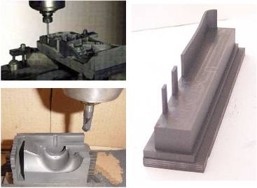

OBJECTIVES
One of the most employed materials for electrode-tool on electroerosion
by penetration process is graphite. Specific characteristics of hardness,
strain, microstructure and friction mechanisms require a differentiated
approach of those applied on metals machining, when choosing tool geometries,
tool material and cutting parameters.
The objective of this work is to obtain a better understanding of industrial
graphite cutting process, specially applied on milling process. The use
of graphite is very important for matrix cut and injection fabricants,
for electrodes fabrication for electroerosion. Those tools are extremely
important for deep cavity machining or complex shaped cavity machining.
PROCEDURES
The obtainment of basic information about industrial graphite machining
begins with a bibliographical review on the theme, on national and international
books and specialized publications. From this research there will be made
a database with state of the art information for this type of process.
From milling assays, comparing different cutting directions, the use
or non-use of lubricant fluids and variation of cutting parameters for
finishing operations, it is intended to obtain technologically useful results
for matrix industry and electroerosion tools.
RESULTS
The results of this research will allow the understanding of fabrication
of electrodes or other components, from graphite, by milling, on a less
empirical way, with better scientific explanation and direct application
in industry. Moreover, it is intended to show that the use of graphite
and its processing are economically viable, and also bring technological
advantages.
It is expected from this research to serve as reference for future developments
on milling area and on cavity obtainment, with use of better tool materials
and fabrication methods.
 |